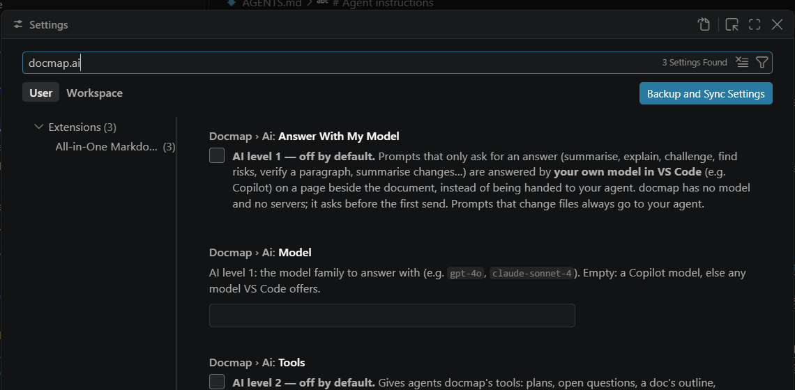
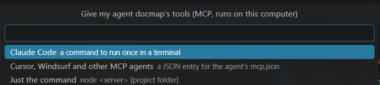

docmap has no AI of its own. It writes good prompts for the AI agent you already use (Claude Code, Codex, Copilot, Cursor, Antigravity…) and keeps your agents' rule files in order.
A menu of ready prompts about the doc you are reading: summarise, explain, challenge, find risks, turn into tasks, make slides, and more.
Helps: getting a useful answer from your agent without writing the prompt yourself.
Where to find it
On the page: ⋯ Ask my AI agent at the top → Ask my AI agent about this file…
For one section: hover a heading on the page → ⋯ → Explain, challenge, find risks, make tasks, write tests…
For several docs: Docs Inbox → hover a file or group → ✨ (Ask My AI Agent About These…).
The editor's … menu, or the Command Palette: All-in-One Markdown Viewer: Ask My AI Agent About This File…
Try it
Open a plan's page.
Click ⋯ Ask my AI agent → Ask my AI agent about this file…
Pick Summarise this file, then paste into your agent.
What you should see
Each prompt has a one-line description. Then: “Prompt copied — paste it into your AI agent.”More detail: every prompt
For a file: Summarise this file · Restructure into a clear doc · Tidy this file's formatting · Brief me on what changed · Continue this plan · Add a TL;DR at the top · Make a one-page summary · Make a slide deck · Turn this AI plan into a checklist · Fix the heading structure · Write a README from this · Update this doc to match the code. Shown only when they fit: Build from this doc · Fill in this doc · Does the code still match this design?
The same menu also has Send my review to my AI agent, Sign off this version… and Show as slides; those don't use any AI.
For a section: Explain this section simply · Challenge this plan · Find risks and gaps · Turn this into tasks · Write tests for this.
For several docs (Docs Inbox): Merge these duplicate docs into one · Write an INDEX.md for these docs · Tidy these docs (propose, change nothing) · Which plans are finished, what is still open? · Find conflicts in my agent instruction files.
Elsewhere: Summarise these changes (Compare) · Verify this paragraph against the code (trust marks).
Build from this doc · Fill in this doc next update#
The problem: you hand your AI a design, it builds something a bit different, and nobody remembers why.
Two ready prompts. Build from this doc: your agent builds exactly what the doc says, then lists what it had to change, assume or leave out. Fill in this doc: your agent fills the empty sections from the code.
Helps: anyone who writes the design first and lets an AI agent build it.
Where to find it
On the page: ⋯ Ask my AI agent → Ask my AI agent about this file… → Build from this doc (design docs, specs, architecture docs) or Fill in this doc (a doc with empty sections, such as a new one from a template).
Try it
Open the page of a design doc.
Click ⋯ Ask my AI agent → Ask my AI agent about this file… → Build from this doc.
Paste the copied prompt into your AI agent.
What you should see
“Prompt copied — paste it into your AI agent.” The doc itself is not edited. Each time the agent picks between options the doc doesn't settle, it writes a short decision record (a one-page note: the choice, the options, and why) in your decisions folder, so the reasons are kept. With Fill in this doc, every heading stays, and anything the agent is unsure of goes under Open questions.
By default a prompt is copied, with the message “Prompt copied — paste it into your AI agent”, so it works with any agent. Or open it straight in Copilot Chat.
Instead of copying a prompt, your own model in VS Code (for example GitHub Copilot) writes the answer on a page next to your doc. Off by default.
Helps: quick summaries and explanations without leaving VS Code.
Where to find it
Setting: docmap.ai.answerWithMyModel (Settings → search “docmap ai”). Pick a model with docmap.ai.model, or leave it empty.
Try it
Settings → search docmap ai → tick Answer With My Model. (Needs a model in VS Code, such as GitHub Copilot.)
On a page: ⋯ Ask my AI agent → Ask my AI agent about this file… → Summarise this file.
Agree once to what will be sent.

The AI settings, both off by default.
What you should see
A page AI — Summarise this file fills in, naming the model that answered. Prompts that change files (like “Turn this into a checklist”) still go to your agent. Your text goes only to your own model, and only after you agree.
Lets your agent ask docmap for your plans, open questions, a doc's outline, and paragraphs that don't match the code. Off by default. Runs on your computer and only reads.
Helps: agents that should check the plans before they write code.
Where to find it
Copilot (agent mode): setting docmap.ai.tools on, then use #docmapPlans and the other docmap tools in Copilot Chat.
Claude Code, Cursor, Windsurf and other MCP agents: Command Palette → All-in-One Markdown Viewer: Set Up docmap Tools for My Agent (MCP)…
Try it
Run Set Up docmap Tools for My Agent (MCP)… (it offers to turn the setting on).
Pick your agent; the command or JSON is copied. Run or paste it as the message says.
Ask your agent: “use docmap to list my plans”.

Claude Code gets a command to run once in a terminal; other agents get a JSON entry for their mcp.json.
What you should see
Your agent answers using docmap's table of your plans. It never goes online.
Keep your agent rules in one AGENTS.md; docmap adds small pointer files so Claude Code, Copilot and Gemini read it too.
Helps: teams that use more than one AI tool and keep rules in sync by hand.
Where to find it
Command Palette: All-in-One Markdown Viewer: Point Other AI Tools to AGENTS.md…
No AGENTS.md yet? docmap offers New Doc from Template… (Agent guide) first.
Try it
Have an AGENTS.md at the top of your project.
Run the command.
Tick the files to add and click OK; check the changes, then save.
What you should see
CLAUDE.md (Claude Code), .github/copilot-instructions.md (Copilot), GEMINI.md (Gemini, Antigravity), each with the line it adds.More detail
Your existing files are never replaced: one marked line is added at the end, only to files you tick, and left unsaved so you can check or undo. A missing file is created with one pointer line. Files that already mention AGENTS.md are left alone.
A Doc map table: kind of doc, where it lives (and how many there are), and the shape to follow.More detail
next update When the project has design docs, the map starts with a Before building line telling your agent to read them first and build to them.
Only the part between docmap's markers (<!-- docmap:doc-map start -->) changes. AGENTS.md is created if missing; CLAUDE.md gets the map when it exists and does not already import AGENTS.md. Files are left unsaved and open for you to review. Run it again to refresh.